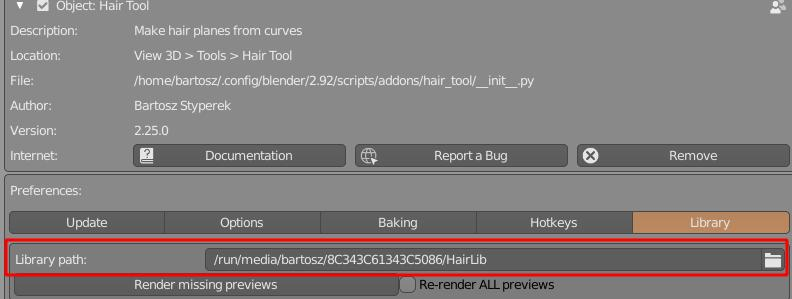
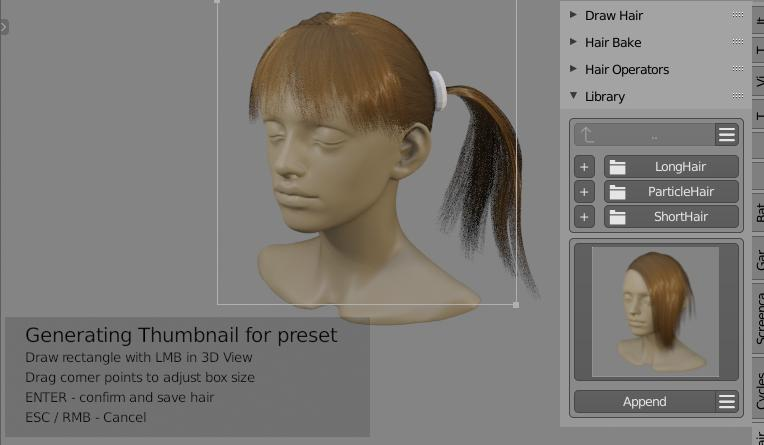

Hair Library¶
Hair Library gives you option to store and load hair objects presets. You can group presets them into categories (folders) if you want.
Note: Sample library file - HairLibrary.zip - can be downloaded from Gumroad site. Use the unique link that you got from Gumroad when you purchased addon, then unzip the HairLibrary.zip file, and point the addon to extracted folder location.
Top half of Library panel is responsible for managing categories (folders), bottom for managing presets (files inside folder)

Library location¶
User Preferences -> Add ons -> Hair Tool -> Library tab.
Select target folder where library is located:

[☰] Categories menu¶
- Add, Delete, Rename category (folder)
Note - Renaming and Deleting categories requires selecting target folder with '+' button next to the category name.
[☰] Presets menu¶
- Add, Delete, Rename, Open active preset (the one that is currently displayed with thumbnail).
After importing preset with Append button you will often have to readjust position of imported hair objects to you character head. For grid surface type of hair - you can remove imported Curve Hair and reposition only grid surfaces. Then just regenerate curve hair again using Curves from grid mesh
Storing presets¶
To store preset use bottom [☰] -> Store Preset.
You can store multiple selected objects into preset if you want.
You will have mark place on screen that will be used for thumbnail generation - for that click and drag making rectangular shape in 3D Viewport. You can adjust the corners of captured area if you want. Finally press enter to store preset.

Note: Thumbnail generation is broken in Blender releases after 2.83 LTS. We have to wait for blender devs to fix it - hopefully in 2.92 release. For now you have to use Blender 2.83 or your thumbnail image will be black.